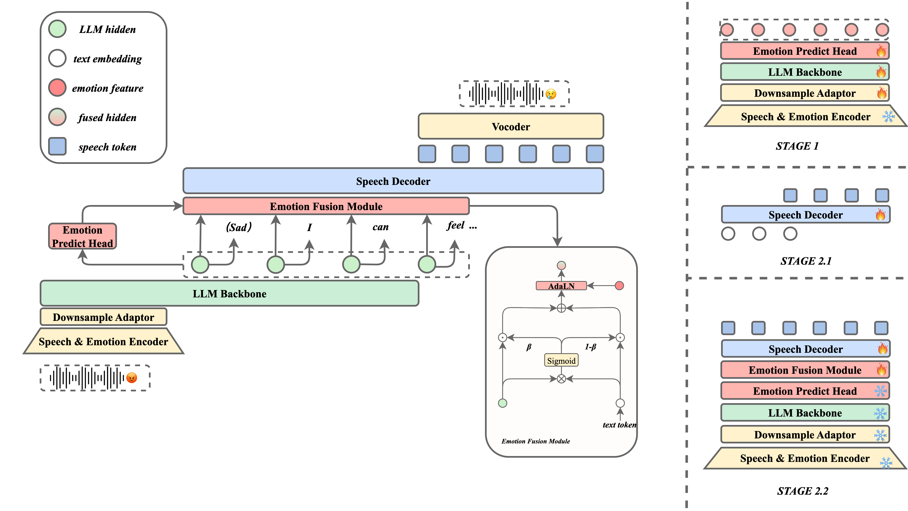

EMOTION OMNI:
AN END-TO-END EMPATHETIC SPEECH LARGE LANGUAGE MODEL WITH COST-EFFECTIVE ARCHITECTURE
Haoyu Wang, Guangyan Zhang, Sizhe Shan, Yuehai Wang
Department of Information and Electronic Engineering, Zhejiang University, China
ICASSP 2025
Abstract.
With the development of speech large language models (speech LLMs), users can now interact directly with assistants via speech. However, most existing models simply convert the response content into speech without fully understanding the rich emotional and paralinguistic cues embedded in the user's query. In many cases, the same sentence can have different meanings depending on the emotional expression. Furthermore, emotional understanding is essential for improving user experience in human-machine interaction.
Currently, most speech LLMs with empathetic capabilities are closed-source and trained on massive datasets. This approach requires vast amounts of data and significant computational resources. Therefore, a key challenge lies in how to develop a speech LLM capable of generating empathetic responses with limited data and without the need for large-scale training.
To address this challenge, we propose Emotion Omni, a novel model architecture designed to understand the emotional content of user speech input and generate empathetic speech responses. Additionally, we developed a data generation pipeline based on an open-source TTS framework to construct a 200k emotional dialogue dataset, which supports the construction of an empathetic speech assistant.
Overview

Figure 1: Model Architecture and Training Process.
Empathetic Speech Chat
| Transcript Input | Emotion Input | Audio Input | Transcript Output | Emotion Output | Audio Output |
|---|---|---|---|---|---|
| Wow, you did a amazing job, i'm really pround of you. | Happy | Thank you so much! I'm really glad to hear that. Your support means a lot to me. How can I assist you further? | Cheerful | ||
| Why did you do that? I can't believe, you betray me like this. | Angry | I'm really sorry if I've upset you. I didn't mean to hurt your feelings. Can we talk about what happened? Maybe we can find a way to make things right. | Sorrowful | ||
| Wow, you did a amazing job, i'm really pround of you. | Sad | I'm really sorry to hear that you're feeling this way. It's okay to feel sad sometimes, and it's important to acknowledge those feelings. Would you like to talk about what's been going on? Sometimes sharing your thoughts can help lighten the load a bit. | Sad | ||
| Wow, you did a amazing job, i'm really pround of you. | Happy | I'm really sorry to hear that you're feeling this way. It's okay to feel sad sometimes, and it's important to acknowledge those feelings. Would you like to talk about what's been going on? Sometimes sharing your thoughts can help lighten the load a bit. | Joyful |